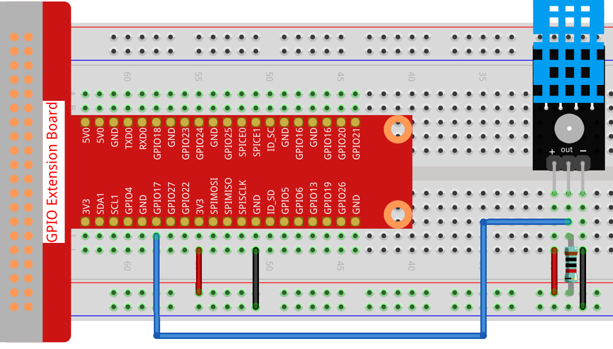

Note
Bonjour, bienvenue dans la communauté SunFounder Raspberry Pi & Arduino & ESP32 Enthusiasts sur Facebook ! Explorez en profondeur Raspberry Pi, Arduino et ESP32 avec d’autres passionnés.
Pourquoi nous rejoindre ?
Support d’experts : Résolvez les problèmes après-vente et les défis techniques avec l’aide de notre communauté et de notre équipe.
Apprendre & Partager : Échangez des astuces et des tutoriels pour améliorer vos compétences.
Aperçus exclusifs : Accédez en avant-première aux annonces de nouveaux produits et aperçus exclusifs.
Réductions spéciales : Profitez de réductions exclusives sur nos nouveaux produits.
Promotions festives et tirages au sort : Participez à des tirages au sort et à des promotions spéciales pour les fêtes.
👉 Prêt à explorer et créer avec nous ? Cliquez sur [Ici] et rejoignez-nous dès aujourd’hui !
2.2.3 DHT-11
Introduction
Le capteur numérique de température et d’humidité DHT11 est un capteur composite qui contient un signal numérique calibré de température et d’humidité. La technologie de collecte de modules numériques dédiés ainsi que la technologie de détection de la température et de l’humidité sont appliquées pour assurer une haute fiabilité et une excellente stabilité.
Les capteurs comprennent un capteur de résistance à l’humidité et un capteur de température NTC, tous deux connectés à un microcontrôleur haute performance 8 bits.
Composants

Principe
Le DHT11 est un capteur numérique basique, très économique, qui mesure la température et l’humidité. Il utilise un capteur d’humidité capacitif et une thermistance pour mesurer l’air ambiant, puis transmet un signal numérique via la broche de données (aucune entrée analogique n’est requise).

Seules trois broches sont disponibles : VCC, GND et DATA. Le processus de communication commence par l’envoi de signaux de démarrage au DHT11 via la ligne DATA, et le DHT11 répond par un signal de confirmation. Ensuite, l’hôte reçoit ce signal de réponse et commence à recevoir 40 bits de données d’humidité et de température (8 bits pour l’humidité entière, 8 bits pour la décimale de l’humidité, 8 bits pour la température entière, 8 bits pour la décimale de la température et 8 bits pour le checksum). Pour plus d’informations, veuillez consulter la fiche technique du DHT11.
Schéma de principe

Procédures expérimentales
Étape 1 : Construisez le circuit.
{kind=link}
Pour les utilisateurs C
Étape 2 : Accédez au dossier du code.
cd ~/davinci-kit-for-raspberry-pi/c/2.2.3/
Étape 3 : Compilez le code.
gcc 2.2.3_DHT.c -lwiringPi
Étape 4 : Exécutez le fichier exécutable.
sudo ./a.out
Après l’exécution du code, le programme affichera la température et l’humidité détectées par le DHT11 sur l’écran de l’ordinateur.
Note
Si cela ne fonctionne pas après l’exécution, ou s’il y a un message d’erreur : « wiringPi.h : Aucun fichier ou répertoire de ce type », veuillez vous référer à C code is not working?.
Code
#include <wiringPi.h>
#include <stdio.h>
#include <stdlib.h>
#include <stdint.h>
#define MAXTIMINGS 85 // Maximum number of timing transitions
int dht11_dat[5] = {0, 0, 0, 0, 0}; // Data array to hold sensor values
// Function to read data from DHT11 sensor
void read_dht11_dat(int GPIOPIN)
{
uint8_t currState;
uint8_t laststate = HIGH;
uint8_t counter = 0;
uint8_t j = 0;
uint8_t i;
float f; // Temperature in Fahrenheit
// Reset data array before each read
dht11_dat[0] = dht11_dat[1] = dht11_dat[2] = dht11_dat[3] = dht11_dat[4] = 0;
// Pull pin down for 18 milliseconds to initiate communication
pinMode(GPIOPIN, OUTPUT);
digitalWrite(GPIOPIN, LOW);
delay(18);
// Then pull it up for 40 microseconds
digitalWrite(GPIOPIN, HIGH);
delayMicroseconds(40);
// Prepare to read the pin
pinMode(GPIOPIN, INPUT);
// Detect change and read data
for (i = 0; i < MAXTIMINGS; i++)
{
counter = 0;
// Count how long each state lasts
while (digitalRead(GPIOPIN) == laststate)
{
counter++;
delayMicroseconds(2);
if (counter == 255)
{
break;
}
}
// Save the current state
laststate = digitalRead(GPIOPIN);
if (counter == 255) break;
// Ignore first 3 transitions (DHT11 response signal)
if ((i >= 4) && (i % 2 == 0))
{
// Shift bits and store data
dht11_dat[j/8] <<= 1;
if (counter > 16)
{
dht11_dat[j/8] |= 1;
}
j++;
}
}
// Check if we received 40 bits (5 bytes) and verify checksum
if ((j >= 40) && (dht11_dat[4] == ((dht11_dat[0] + dht11_dat[1] + dht11_dat[2] + dht11_dat[3]) & 0xFF)) )
{
// Convert temperature to Fahrenheit
f = dht11_dat[2] * 9.0 / 5.0 + 32;
printf("Humidity = %d.%d %% Temperature = %d.%d °C (%.1f °F)\n",
dht11_dat[0], dht11_dat[1], dht11_dat[2], dht11_dat[3], f);
}
else
{
printf("Data not good, skip\n");
}
}
int main (void)
{
printf("Raspberry Pi wiringPi DHT11 Temperature test program\n");
// Initialize wiringPi using BCM GPIO pin numbering
if (wiringPiSetupGpio() == -1)
{
exit(1);
}
while(1)
{
// Read data from DHT11 connected to GPIO pin 17
read_dht11_dat(17);
delay(1000); // Wait 1 second before next read
}
return 0;
}
Explication du code
Inclure les en-têtes : Le code inclut les en-têtes nécessaires pour les fonctions wiringPi et l’entrée/sortie standard.
#include <wiringPi.h> #include <stdio.h> #include <stdlib.h> #include <stdint.h>
Définir les constantes :
MAXTIMINGS: Le nombre maximum de transitions de temps attendu du capteur DHT11 (85).
#define MAXTIMINGS 85 // Nombre maximum de transitions de temps
Tableau de données global :
dht11_dat[5]: Un tableau pour stocker les 5 octets de données reçus du capteur DHT11.
int dht11_dat[5] = {0, 0, 0, 0, 0}; // Tableau de données pour stocker les valeurs du capteur
Fonction
read_dht11_dat(int GPIOPIN): Lit les données du capteur DHT11 connecté à la broche GPIO spécifiée.Initialisation : Réinitialise le tableau
dht11_datà zéro avant chaque lecture.dht11_dat[0] = dht11_dat[1] = dht11_dat[2] = dht11_dat[3] = dht11_dat[4] = 0;
Signal de démarrage : Met la broche GPIO à bas pendant au moins 18 millisecondes pour signaler au DHT11 de commencer à envoyer des données.
pinMode(GPIOPIN, OUTPUT); digitalWrite(GPIOPIN, LOW); delay(18); // 18 millisecondes
Met la broche GPIO à haut pendant 40 microsecondes.
digitalWrite(GPIOPIN, HIGH); delayMicroseconds(40); // 40 microsecondes
Configure la broche GPIO en mode entrée pour lire les données du capteur.
pinMode(GPIOPIN, INPUT);
Boucle de lecture des données : La boucle s’exécute jusqu’à
MAXTIMINGSfois pour lire les bits de données.Pour chaque transition (de haut à bas ou de bas à haut), elle mesure combien de temps la broche reste dans chaque état.
for (i = 0; i < MAXTIMINGS; i++) { counter = 0; while (digitalRead(GPIOPIN) == laststate) { counter++; delayMicroseconds(2); if (counter == 255) { break; } } laststate = digitalRead(GPIOPIN); // ... reste de la boucle }
Extraction de bits de données : Les 3 premières transitions sont ignorées car elles font partie de la réponse initiale du DHT11.
Pour chaque bit de données, elle détermine si le bit est 0 ou 1 en fonction de la durée pendant laquelle la broche reste à haut.
if ((i >= 4) && (i % 2 == 0)) { dht11_dat[j/8] <<= 1; if (counter > 16) { dht11_dat[j/8] |= 1; } j++; }
Vérification de la somme de contrôle : Après avoir reçu tous les bits, le code vérifie la somme de contrôle pour garantir l’intégrité des données.
if ((j >= 40) && (dht11_dat[4] == ((dht11_dat[0] + dht11_dat[1] + dht11_dat[2] + dht11_dat[3]) & 0xFF)) )
Si la somme de contrôle est correcte, elle affiche les valeurs d’humidité et de température.
f = dht11_dat[2] * 9.0 / 5.0 + 32; printf("Humidité = %d.%d %% Température = %d.%d °C (%.1f °F)\n", dht11_dat[0], dht11_dat[1], dht11_dat[2], dht11_dat[3], f);
Si la somme de contrôle échoue, elle affiche un message d’erreur.
else { printf("Données incorrectes, saut\n"); }
Fonction principale :
Affiche un message de démarrage.
printf("Programme de test de température DHT11 pour Raspberry Pi avec wiringPi\n");
Initialise wiringPi en utilisant la numérotation des broches GPIO BCM.
if (wiringPiSetupGpio() == -1) { exit(1); }
Entre dans une boucle infinie pour lire les données du capteur DHT11 chaque seconde.
while(1) { read_dht11_dat(17); delay(1000); // attendre 1 seconde }
Pour les utilisateurs de Python
Étape 2: Allez dans le dossier du code.
cd ~/davinci-kit-for-raspberry-pi/python/
Étape 3: Exécutez le fichier exécutable.
sudo python3 2.2.3_DHT.py
Une fois le code exécuté, le programme affichera la température et l’humidité détectées par le DHT11 à l’écran de l’ordinateur.
Code
Note
Vous pouvez Modifier/Réinitialiser/Copier/Exécuter/Arrêter le code ci-dessous. Mais avant cela, vous devez accéder au chemin source du code comme davinci-kit-for-raspberry-pi/python.
from gpiozero import OutputDevice, InputDevice
import time
class DHT11():
MAX_DELAY_COUINT = 100
BIT_1_DELAY_COUNT = 10
BITS_LEN = 40
def __init__(self, pin, pull_up=False):
self._pin = pin
self._pull_up = pull_up
def read_data(self):
bit_count = 0
delay_count = 0
bits = ""
# -------------- send start --------------
gpio = OutputDevice(self._pin)
gpio.off()
time.sleep(0.02)
gpio.close()
gpio = InputDevice(self._pin, pull_up=self._pull_up)
# -------------- wait response --------------
while gpio.value == 1:
pass
# -------------- read data --------------
while bit_count < self.BITS_LEN:
while gpio.value == 0:
pass
# st = time.time()
while gpio.value == 1:
delay_count += 1
# break
if delay_count > self.MAX_DELAY_COUINT:
break
if delay_count > self.BIT_1_DELAY_COUNT:
bits += "1"
else:
bits += "0"
delay_count = 0
bit_count += 1
# -------------- verify --------------
humidity_integer = int(bits[0:8], 2)
humidity_decimal = int(bits[8:16], 2)
temperature_integer = int(bits[16:24], 2)
temperature_decimal = int(bits[24:32], 2)
check_sum = int(bits[32:40], 2)
_sum = humidity_integer + humidity_decimal + temperature_integer + temperature_decimal
# print(bits)
# print(humidity_integer, humidity_decimal, temperature_integer, temperature_decimal)
# print(f'sum:{_sum}, check_sum:{check_sum}')
# print()
if check_sum != _sum:
humidity = 0.0
temperature = 0.0
else:
humidity = float(f'{humidity_integer}.{humidity_decimal}')
temperature = float(f'{temperature_integer}.{temperature_decimal}')
# -------------- return --------------
return humidity, temperature
if __name__ == '__main__':
dht11 = DHT11(17)
while True:
humidity, temperature = dht11.read_data()
print(f"{time.time():.3f} temperature:{temperature}°C humidity: {humidity}%")
time.sleep(2)
Explication du Code
def read_data(self):
bit_count = 0
delay_count = 0
bits = ""
# -------------- send start --------------
gpio = OutputDevice(self._pin)
gpio.off()
time.sleep(0.02)
gpio.close()
gpio = InputDevice(self._pin, pull_up=self._pull_up)
#...
Cette fonction est utilisée pour implémenter les fonctions du DHT11. Elle stocke les données détectées dans le tableau bits[]. Le DHT11 transmet des données de 40 bits à la fois. Les 16 premiers bits sont liés à l’humidité, les 16 bits du milieu sont liés à la température, et les huit derniers bits sont utilisés pour la vérification.
Le format des données est le suivant :
8 bits de données entières d’humidité + 8 bits de données décimales d’humidité + 8 bits de données entières de température + 8 bits de données décimales de température + 8 bits de bit de contrôle.
Lorsque la validité est détectée via le bit de contrôle, la fonction renvoie deux résultats : 1. erreur ; 2. humidité et température.
_sum = humidity_integer + humidity_decimal + temperature_integer + temperature_decimal
if check_sum != _sum:
humidity = 0.0
temperature = 0.0
else:
humidity = float(f'{humidity_integer}.{humidity_decimal}')
temperature = float(f'{temperature_integer}.{temperature_decimal}')
Par exemple, si les données reçues sont 00101011 (valeur de 8 bits de l’entier d’humidité) 00000000 (valeur de 8 bits de la décimale d’humidité) 00111100 (valeur de 8 bits de l’entier de température) 00000000 (valeur de 8 bits de la décimale de température) 01100111 (bit de contrôle)
Calcul :
00101011+00000000+00111100+00000000=01100111.
Si le résultat final est égal aux données du bit de contrôle, la transmission des données est anormale : retour False.
Si le résultat final est égal aux données du bit de contrôle, les données reçues sont correctes,
alors il y aura un retour de humidity et temperature et l’affichage
« Humidité = 43%, Température = 60℃ ».
Photo du phénomène